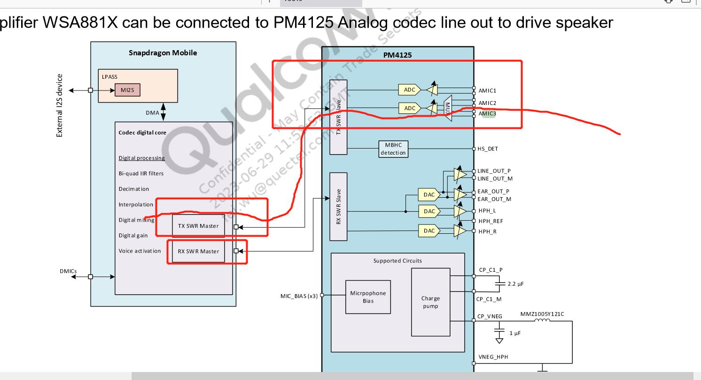
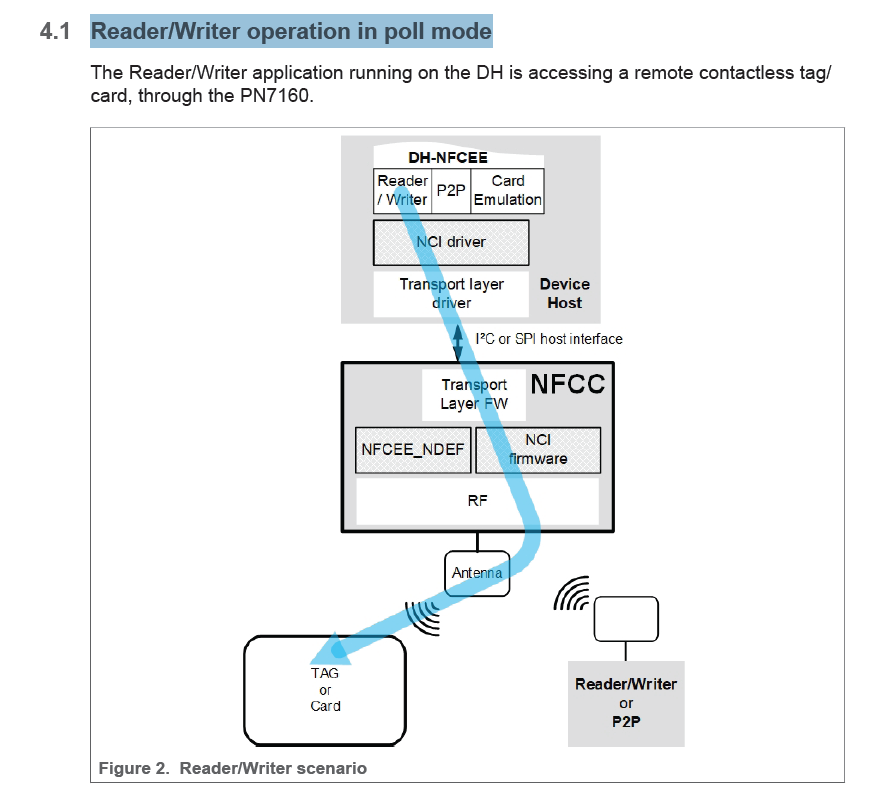
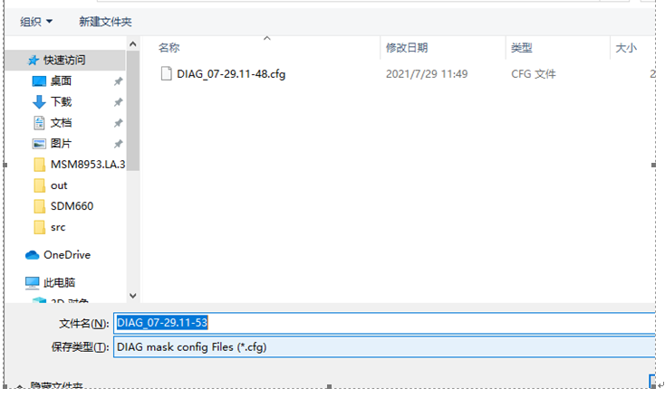
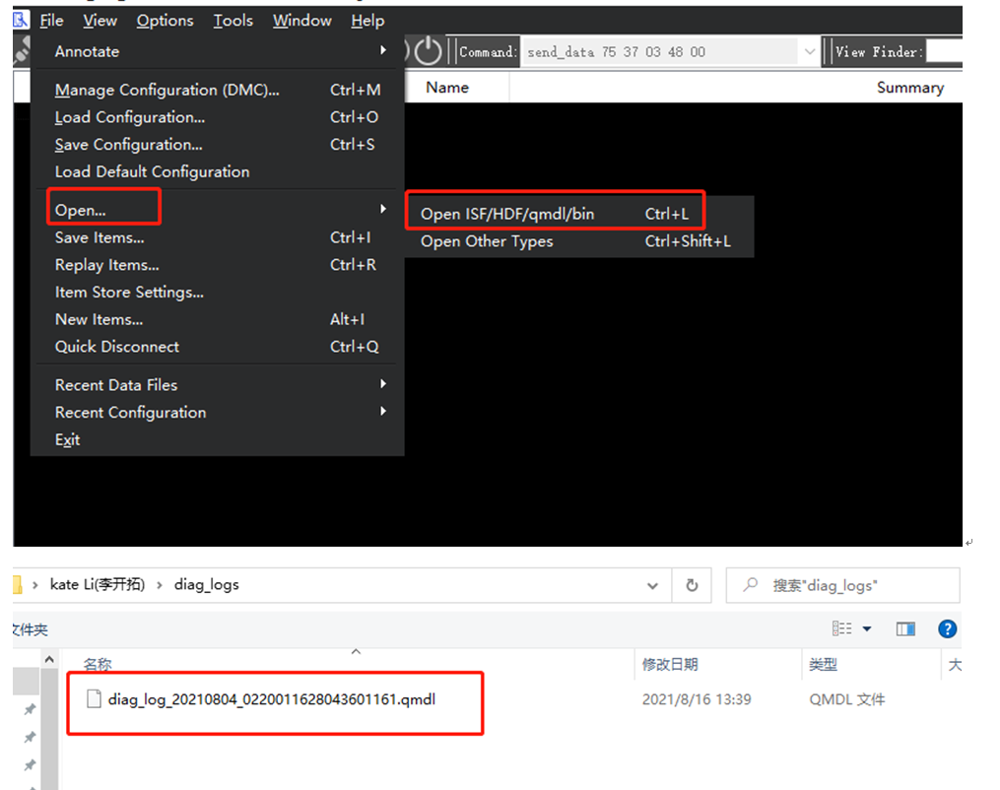
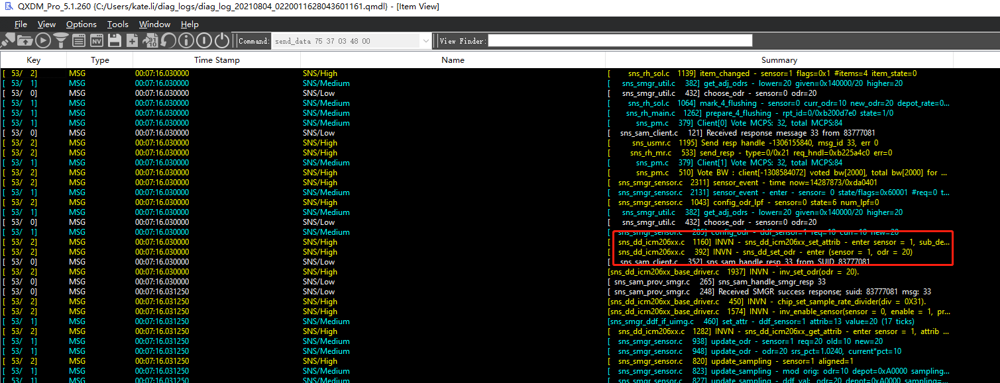

<!DOCTYPE html>
<html class="writer-html5" lang="zh-CN" >
<head>
  <meta charset="utf-8" />
  
  <meta name="viewport" content="width=device-width, initial-scale=1.0" />
  
<title>victor</title>


  
  <link rel="stylesheet" href="../../../../_static/css/theme.css" type="text/css" />
  <link rel="stylesheet" href="../../../../_static/pygments.css" type="text/css" />
  <link rel="stylesheet" href="../../../../_static/pygments.css" type="text/css" />
  <link rel="stylesheet" href="../../../../_static/css/theme.css" type="text/css" />
  <link rel="stylesheet" href="../../../../_static/default.css" type="text/css" />

  
  

  
  

  

  
  <!--[if lt IE 9]>
    <script src="../../../../_static/js/html5shiv.min.js"></script>
  <![endif]-->
  
    
      <script type="text/javascript" id="documentation_options" data-url_root="../../../../" src="../../../../_static/documentation_options.js"></script>
        <script data-url_root="../../../../" id="documentation_options" src="../../../../_static/documentation_options.js"></script>
        <script src="../../../../_static/jquery.js"></script>
        <script src="../../../../_static/underscore.js"></script>
        <script src="../../../../_static/_sphinx_javascript_frameworks_compat.js"></script>
        <script src="../../../../_static/doctools.js"></script>
        <script src="../../../../_static/sphinx_highlight.js"></script>
        <script src="../../../../_static/translations.js"></script>
        <script src="../../../../_static/js/baidutongji.js"></script>
    
    <script type="text/javascript" src="../../../../_static/js/theme.js"></script>

    
    <link rel="index" title="索引" href="../../../../genindex.html" />
    <link rel="search" title="搜索" href="../../../../search.html" /> 
</head>

<body class="wy-body-for-nav">

   
  <div class="wy-grid-for-nav">
    
    <nav data-toggle="wy-nav-shift" class="wy-nav-side">
      <div class="wy-side-scroll">
        <div class="wy-side-nav-search" >
          

          
            <a href="../../../../index.html" class="icon icon-home"> victor_文档
          

          
          </a>

          
            
            
          

          
<div role="search">
  <form id="rtd-search-form" class="wy-form" action="../../../../search.html" method="get">
    <input type="text" name="q" placeholder="在文档中搜索" />
    <input type="hidden" name="check_keywords" value="yes" />
    <input type="hidden" name="area" value="default" />
  </form>
</div>

          
        </div>

        
        <div class="wy-menu wy-menu-vertical" data-spy="affix" role="navigation" aria-label="main navigation">
          
            
            
              
            
            
              <!-- Local TOC -->
              <div class="local-toc"><ul>
<li><a class="reference internal" href="#">README</a></li>
<li><a class="reference internal" href="#nfc">nfc 流程截图</a></li>
<li><a class="reference internal" href="#id1">nfc术语</a><ul>
<li><a class="reference internal" href="#dpc-dynamic-power-control">DPC = dynamic power control</a></li>
<li><a class="reference internal" href="#dwl-req-download-request-pin">DWL_REQ = DoWnLoad REQuest pin</a></li>
<li><a class="reference internal" href="#nfc-near-field-communication">NFC = Near Field Communication</a></li>
<li><a class="reference internal" href="#nfcc-near-field-communication-controller">NFCC = Near Field Communication Controller</a></li>
<li><a class="reference internal" href="#ven-v-enable-pin-pn7160-hard-reset-control">VEN = V ENable pin (PN7160 Hard reset control)</a></li>
<li><a class="reference internal" href="#wkup-req-wake-up-request">WKUP_REQ = Wake-up request</a></li>
<li><a class="reference internal" href="#dh-device-host">DH = Device Host</a></li>
<li><a class="reference internal" href="#dh-nfcee-nfc-execution-environment-running-on-the-dh">DH-NFCEE = NFC Execution Environment running on the DH</a></li>
<li><a class="reference internal" href="#hci-host-controller-interface">HCI = Host Controller Interface</a></li>
<li><a class="reference internal" href="#hcp-host-controller-protocol">HCP = Host Controller Protocol</a></li>
<li><a class="reference internal" href="#hdll-host-data-link-layer">HDLL = Host Data Link Layer</a></li>
<li><a class="reference internal" href="#lpcd-low-power-card-detector">LPCD =  Low Power Card Detector</a></li>
<li><a class="reference internal" href="#nci-nfc-controller-interface">NCI = NFC Controller Interface</a></li>
<li><a class="reference internal" href="#nfcee-nfc-execution-environment">NFCEE = NFC Execution Environment</a></li>
<li><a class="reference internal" href="#rf-radio-frequency">RF = Radio Frequency</a></li>
<li><a class="reference internal" href="#rfu-reserved-for-future-use">RFU = Reserved For Future Use</a></li>
<li><a class="reference internal" href="#peer-to-peer-p2p">Peer to Peer = P2P</a></li>
<li><a class="reference internal" href="#vdd-tx">VDD(TX)</a></li>
<li><a class="reference internal" href="#nfcee-ndef-is-an-nfcc-embedded-ndef-tag-emulation-configured-by-the-dh">“NFCEE_NDEF” is an NFCC embedded NDEF tag emulation, configured by the DH.</a></li>
</ul>
</li>
<li><a class="reference internal" href="#power-up-sequences">Power-up sequences,上电时序</a></li>
<li><a class="reference internal" href="#power-down-sequences">Power-down sequences</a></li>
<li><a class="reference internal" href="#reader-writer-operation-in-poll-mode">Reader/Writer operation in poll mode</a></li>
<li><a class="reference internal" href="#id2">卡模拟</a><ul>
<li><a class="reference internal" href="#card-emulated-by-the-dh-nfcee">Card Emulated by the DH-NFCEE</a></li>
<li><a class="reference internal" href="#card-emulation-over-nfcc">Card Emulation over NFCC</a></li>
</ul>
</li>
<li><a class="reference internal" href="#nci">NCI</a><ul>
<li><a class="reference internal" href="#id3">模型</a></li>
</ul>
</li>
<li><a class="reference internal" href="#porting">porting</a><ul>
<li><a class="reference internal" href="#id4">按照文档porting</a></li>
<li><a class="reference internal" href="#pn7160-se-qssi-12-frameworks-base-core-java-android-se-omapi-api">pn7160 没有se,删除掉QSSI.12/frameworks/base/core/java/android/se/omapi/ 文件夹后,编译报错,看起来是api不匹配</a></li>
<li><a class="reference internal" href="#android-se-omapi-packages-apps-nfc">删除android.se.omapi后,很多 packages/apps/Nfc/的类找不到</a></li>
<li><a class="reference internal" href="#aidroutingmanager">报AidRoutingManager找不到</a></li>
<li><a class="reference internal" href="#se-um-hardware-nxp-nfc">删除se后,报UM相关的 hardware/nxp/nfc报错</a></li>
<li><a class="reference internal" href="#vendor-nxp-nxpnfc-1-0-inxpnfc-h-out">vendor/nxp/nxpnfc/1.0/INxpNfc.h,out没有生成</a></li>
<li><a class="reference internal" href="#se">还有很多跟删除se相关报错的</a></li>
<li><a class="reference internal" href="#api-lint-unexpected-reference-to-android-manifest-permission-nfc-set-controller-always-on">API-LINT 报错Unexpected reference to android.Manifest.permission.NFC_SET_CONTROLLER_ALWAYS_ON</a></li>
<li><a class="reference internal" href="#nfc-apk-crash">开机nfc apk 报crash</a></li>
</ul>
</li>
<li><a class="reference internal" href="#nfc-7160-porting">nfc 7160 porting总结</a></li>
</ul>
</div>
            
          
        </div>
        
      </div>
    </nav>

    <section data-toggle="wy-nav-shift" class="wy-nav-content-wrap">

      
      <nav class="wy-nav-top" aria-label="top navigation">
        
          <i data-toggle="wy-nav-top" class="fa fa-bars"></i>
          <a href="../../../../index.html">victor_文档</a>
        
      </nav>


      <div class="wy-nav-content">
        
        <div class="rst-content">
        
          


<div role="navigation" aria-label="breadcrumbs navigation">

  <ul class="wy-breadcrumbs">
     
<li><a href="../../../../index.html" class="icon icon-home"></a> &raquo;</li>
<li>README</li>
<li style="float: right;margin-left: 10px;"><a href="javascript:history.forward()">Forward</a></li>
<li style="float: right;margin-left: 10px;"><a href="javascript:history.back()">Go Back</a> | </li>
<li style="float: right;margin-left: 10px;"><a href="/index.html">Home</a> | </li>

    
      <li class="wy-breadcrumbs-aside">
        
          
        
      </li>
    
  </ul>

  
  <hr/>
</div>
          <div role="main" class="document" itemscope="itemscope" itemtype="http://schema.org/Article">
           <div itemprop="articleBody">
            
  <div class="section" id="readme">
<h1>README<a class="headerlink" href="#readme" title="此标题的永久链接">¶</a></h1>
<p>由于pn557 快停产,所以切换到pn7160, android 12平台</p>
<p>所以要重新搞一次portting</p>
</div>
<div class="section" id="nfc">
<h1>nfc 流程截图<a class="headerlink" href="#nfc" title="此标题的永久链接">¶</a></h1>
<p></p>
</div>
<div class="section" id="id1">
<h1>nfc术语<a class="headerlink" href="#id1" title="此标题的永久链接">¶</a></h1>
<div class="section" id="dpc-dynamic-power-control">
<h2>DPC = dynamic power control<a class="headerlink" href="#dpc-dynamic-power-control" title="此标题的永久链接">¶</a></h2>
<p>Therefore a process is needed to control the output power and the driver current, and to
adapt it to the loading and detuning, if needed. This process is automatically done with
the dynamic power control (DPC).</p>
</div>
<div class="section" id="dwl-req-download-request-pin">
<h2>DWL_REQ = DoWnLoad REQuest pin<a class="headerlink" href="#dwl-req-download-request-pin" title="此标题的永久链接">¶</a></h2>
<p>当dwl_req 拉高,并且 reset脚从低到高,芯片进入 download模式</p>
<p>When the DWL_REQ pin is set to the digital high level (this pin is referenced to
VDD(PAD) power level) at reset (VEN transition from digital low to digital high), the chip
will boot in download mode.</p>
<p>In this case, the download protocol described in the PN7160 User Manual can be used to
load a new firmware image into the chip.</p>
<p>This firmware upgrade feature is fully supported by the NXP HAL middleware stack
(Android and Linux) provided that the DWL_REQ (DL_REQ) pin is connected a GPIO pin
of the host controller.</p>
</div>
<div class="section" id="nfc-near-field-communication">
<h2>NFC = Near Field Communication<a class="headerlink" href="#nfc-near-field-communication" title="此标题的永久链接">¶</a></h2>
</div>
<div class="section" id="nfcc-near-field-communication-controller">
<h2>NFCC = Near Field Communication Controller<a class="headerlink" href="#nfcc-near-field-communication-controller" title="此标题的永久链接">¶</a></h2>
</div>
<div class="section" id="ven-v-enable-pin-pn7160-hard-reset-control">
<h2>VEN = V ENable pin (PN7160 Hard reset control)<a class="headerlink" href="#ven-v-enable-pin-pn7160-hard-reset-control" title="此标题的永久链接">¶</a></h2>
</div>
<div class="section" id="wkup-req-wake-up-request">
<h2>WKUP_REQ = Wake-up request<a class="headerlink" href="#wkup-req-wake-up-request" title="此标题的永久链接">¶</a></h2>
<p>A6650 项目,没有接nfc wake up 脚</p>
<p>When the PN7160 goes in standby mode, there is 3 possibilities to wake it up:</p>
<ul class="simple">
<li><p>PN7160 detects an external RF field</p></li>
<li><p>Host controller sends a command (via host interface) to PN7160</p></li>
<li><p>Host drives WKUP_REQ pin to high level</p></li>
</ul>
</div>
<div class="section" id="dh-device-host">
<h2>DH = Device Host<a class="headerlink" href="#dh-device-host" title="此标题的永久链接">¶</a></h2>
</div>
<div class="section" id="dh-nfcee-nfc-execution-environment-running-on-the-dh">
<h2>DH-NFCEE = NFC Execution Environment running on the DH<a class="headerlink" href="#dh-nfcee-nfc-execution-environment-running-on-the-dh" title="此标题的永久链接">¶</a></h2>
</div>
<div class="section" id="hci-host-controller-interface">
<h2>HCI = Host Controller Interface<a class="headerlink" href="#hci-host-controller-interface" title="此标题的永久链接">¶</a></h2>
</div>
<div class="section" id="hcp-host-controller-protocol">
<h2>HCP = Host Controller Protocol<a class="headerlink" href="#hcp-host-controller-protocol" title="此标题的永久链接">¶</a></h2>
</div>
<div class="section" id="hdll-host-data-link-layer">
<h2>HDLL = Host Data Link Layer<a class="headerlink" href="#hdll-host-data-link-layer" title="此标题的永久链接">¶</a></h2>
</div>
<div class="section" id="lpcd-low-power-card-detector">
<h2>LPCD =  Low Power Card Detector<a class="headerlink" href="#lpcd-low-power-card-detector" title="此标题的永久链接">¶</a></h2>
</div>
<div class="section" id="nci-nfc-controller-interface">
<h2>NCI = NFC Controller Interface<a class="headerlink" href="#nci-nfc-controller-interface" title="此标题的永久链接">¶</a></h2>
</div>
<div class="section" id="nfcee-nfc-execution-environment">
<h2>NFCEE = NFC Execution Environment<a class="headerlink" href="#nfcee-nfc-execution-environment" title="此标题的永久链接">¶</a></h2>
</div>
<div class="section" id="rf-radio-frequency">
<h2>RF = Radio Frequency<a class="headerlink" href="#rf-radio-frequency" title="此标题的永久链接">¶</a></h2>
</div>
<div class="section" id="rfu-reserved-for-future-use">
<h2>RFU = Reserved For Future Use<a class="headerlink" href="#rfu-reserved-for-future-use" title="此标题的永久链接">¶</a></h2>
</div>
<div class="section" id="peer-to-peer-p2p">
<h2>Peer to Peer = P2P<a class="headerlink" href="#peer-to-peer-p2p" title="此标题的永久链接">¶</a></h2>
</div>
<div class="section" id="vdd-tx">
<h2>VDD(TX)<a class="headerlink" href="#vdd-tx" title="此标题的永久链接">¶</a></h2>
<p>天线输出能力,由VDD(up)控制 VDD(TX) 2.7v-5.25v</p>
<p>The voltage level on TX output buffer is coming from VDD(TX) and this pin is powered
internally by the PN7160 thanks to the TXLDO block. The output voltage of this TXLDO
can be set between 2.7 V to 5.25 V depending on the VDD(UP) voltage.</p>
</div>
<div class="section" id="nfcee-ndef-is-an-nfcc-embedded-ndef-tag-emulation-configured-by-the-dh">
<h2>“NFCEE_NDEF” is an NFCC embedded NDEF tag emulation, configured by the DH.<a class="headerlink" href="#nfcee-ndef-is-an-nfcc-embedded-ndef-tag-emulation-configured-by-the-dh" title="此标题的永久链接">¶</a></h2>
<p></p>
</div>
</div>
<div class="section" id="power-up-sequences">
<h1>Power-up sequences,上电时序<a class="headerlink" href="#power-up-sequences" title="此标题的永久链接">¶</a></h1>
<p>PN7160_PN7161.pdf,第29页, Ven脚,在power脚拉高后,再拉高</p>
</div>
<div class="section" id="power-down-sequences">
<h1>Power-down sequences<a class="headerlink" href="#power-down-sequences" title="此标题的永久链接">¶</a></h1>
<p>During power-down sequence, VEN shall always be set low before VDD(PAD) is shut down.</p>
</div>
<div class="section" id="reader-writer-operation-in-poll-mode">
<h1>Reader/Writer operation in poll mode<a class="headerlink" href="#reader-writer-operation-in-poll-mode" title="此标题的永久链接">¶</a></h1>
<p></p>
</div>
<div class="section" id="id2">
<h1>卡模拟<a class="headerlink" href="#id2" title="此标题的永久链接">¶</a></h1>
<div class="section" id="card-emulated-by-the-dh-nfcee">
<h2>Card Emulated by the DH-NFCEE<a class="headerlink" href="#card-emulated-by-the-dh-nfcee" title="此标题的永久链接">¶</a></h2>
<p></p>
</div>
<div class="section" id="card-emulation-over-nfcc">
<h2>Card Emulation over NFCC<a class="headerlink" href="#card-emulation-over-nfcc" title="此标题的永久链接">¶</a></h2>
<p></p>
</div>
</div>
<div class="section" id="nci">
<h1>NCI<a class="headerlink" href="#nci" title="此标题的永久链接">¶</a></h1>
<div class="section" id="id3">
<h2>模型<a class="headerlink" href="#id3" title="此标题的永久链接">¶</a></h2>
<p></p>
</div>
</div>
<div class="section" id="porting">
<h1>porting<a class="headerlink" href="#porting" title="此标题的永久链接">¶</a></h1>
<div class="section" id="id4">
<h2>按照文档porting<a class="headerlink" href="#id4" title="此标题的永久链接">¶</a></h2>
</div>
<div class="section" id="pn7160-se-qssi-12-frameworks-base-core-java-android-se-omapi-api">
<h2>pn7160 没有se,删除掉QSSI.12/frameworks/base/core/java/android/se/omapi/ 文件夹后,编译报错,看起来是api不匹配<a class="headerlink" href="#pn7160-se-qssi-12-frameworks-base-core-java-android-se-omapi-api" title="此标题的永久链接">¶</a></h2>
<div class="highlight-default notranslate"><div class="highlight"><pre><span></span>android-non-updatable.api.public.latest/gen/android-non-updatable.api.public.latest:37114: error: Removed package android.se.omapi [RemovedPackage]

******************************
You have tried to change the API from what has been previously released in
an SDK.  Please fix the errors listed above.
******************************
exit status 255
</pre></div>
</div>
<ul class="simple">
<li><p>把相关prebuild目录下的 android.se.omapi 删掉</p></li>
</ul>
</div>
<div class="section" id="android-se-omapi-packages-apps-nfc">
<h2>删除android.se.omapi后,很多 packages/apps/Nfc/的类找不到<a class="headerlink" href="#android-se-omapi-packages-apps-nfc" title="此标题的永久链接">¶</a></h2>
<div class="highlight-default notranslate"><div class="highlight"><pre><span></span><span class="n">packages</span><span class="o">/</span><span class="n">apps</span><span class="o">/</span><span class="n">Nfc</span><span class="o">/</span><span class="n">src</span><span class="o">/</span><span class="n">com</span><span class="o">/</span><span class="n">android</span><span class="o">/</span><span class="n">nfc</span><span class="o">/</span><span class="n">NfcService</span><span class="o">.</span><span class="n">java</span><span class="p">:</span><span class="mi">99</span><span class="p">:</span> <span class="n">error</span><span class="p">:</span> <span class="n">package</span> <span class="n">android</span><span class="o">.</span><span class="n">se</span><span class="o">.</span><span class="n">omapi</span> <span class="n">does</span> <span class="ow">not</span> <span class="n">exist</span>
<span class="kn">import</span> <span class="nn">android.se.omapi.ISecureElementService</span><span class="p">;</span>
                       <span class="o">^</span>
<span class="n">packages</span><span class="o">/</span><span class="n">apps</span><span class="o">/</span><span class="n">Nfc</span><span class="o">/</span><span class="n">src</span><span class="o">/</span><span class="n">com</span><span class="o">/</span><span class="n">android</span><span class="o">/</span><span class="n">nfc</span><span class="o">/</span><span class="n">NfcService</span><span class="o">.</span><span class="n">java</span><span class="p">:</span><span class="mi">113</span><span class="p">:</span> <span class="n">error</span><span class="p">:</span> <span class="n">cannot</span> <span class="n">find</span> <span class="n">symbol</span>
<span class="kn">import</span> <span class="nn">com.android.nfc.cardemulation.AidRoutingManager</span><span class="p">;</span>
                                    <span class="o">^</span>
  <span class="n">symbol</span><span class="p">:</span>   <span class="k">class</span> <span class="nc">AidRoutingManager</span>
  <span class="n">location</span><span class="p">:</span> <span class="n">package</span> <span class="n">com</span><span class="o">.</span><span class="n">android</span><span class="o">.</span><span class="n">nfc</span><span class="o">.</span><span class="n">cardemulation</span>
<span class="n">packages</span><span class="o">/</span><span class="n">apps</span><span class="o">/</span><span class="n">Nfc</span><span class="o">/</span><span class="n">src</span><span class="o">/</span><span class="n">com</span><span class="o">/</span><span class="n">android</span><span class="o">/</span><span class="n">nfc</span><span class="o">/</span><span class="n">NfcService</span><span class="o">.</span><span class="n">java</span><span class="p">:</span><span class="mi">114</span><span class="p">:</span> <span class="n">error</span><span class="p">:</span> <span class="n">cannot</span> <span class="n">find</span> <span class="n">symbol</span>
<span class="kn">import</span> <span class="nn">com.android.nfc.cardemulation.CardEmulationManager</span><span class="p">;</span>
                                    <span class="o">^</span>
  <span class="n">symbol</span><span class="p">:</span>   <span class="k">class</span> <span class="nc">CardEmulationManager</span>
  <span class="n">location</span><span class="p">:</span> <span class="n">package</span> <span class="n">com</span><span class="o">.</span><span class="n">android</span><span class="o">.</span><span class="n">nfc</span><span class="o">.</span><span class="n">cardemulation</span>
<span class="n">packages</span><span class="o">/</span><span class="n">apps</span><span class="o">/</span><span class="n">Nfc</span><span class="o">/</span><span class="n">src</span><span class="o">/</span><span class="n">com</span><span class="o">/</span><span class="n">android</span><span class="o">/</span><span class="n">nfc</span><span class="o">/</span><span class="n">NfcService</span><span class="o">.</span><span class="n">java</span><span class="p">:</span><span class="mi">115</span><span class="p">:</span> <span class="n">error</span><span class="p">:</span> <span class="n">cannot</span> <span class="n">find</span> <span class="n">symbol</span>
<span class="kn">import</span> <span class="nn">com.android.nfc.cardemulation.RegisteredAidCache</span><span class="p">;</span>
                                    <span class="o">^</span>
  <span class="n">symbol</span><span class="p">:</span>   <span class="k">class</span> <span class="nc">RegisteredAidCache</span>
  <span class="n">location</span><span class="p">:</span> <span class="n">package</span> <span class="n">com</span><span class="o">.</span><span class="n">android</span><span class="o">.</span><span class="n">nfc</span><span class="o">.</span><span class="n">cardemulation</span>
<span class="n">packages</span><span class="o">/</span><span class="n">apps</span><span class="o">/</span><span class="n">Nfc</span><span class="o">/</span><span class="n">src</span><span class="o">/</span><span class="n">com</span><span class="o">/</span><span class="n">android</span><span class="o">/</span><span class="n">nfc</span><span class="o">/</span><span class="n">NfcService</span><span class="o">.</span><span class="n">java</span><span class="p">:</span><span class="mi">122</span><span class="p">:</span> <span class="n">error</span><span class="p">:</span> <span class="n">package</span> <span class="n">com</span><span class="o">.</span><span class="n">android</span><span class="o">.</span><span class="n">nfc</span><span class="o">.</span><span class="n">dhimpl</span> <span class="n">does</span> <span class="ow">not</span> <span class="n">exist</span>
<span class="kn">import</span> <span class="nn">com.android.nfc.dhimpl.NativeNfcManager</span><span class="p">;</span>
                             <span class="o">^</span>
<span class="n">packages</span><span class="o">/</span><span class="n">apps</span><span class="o">/</span><span class="n">Nfc</span><span class="o">/</span><span class="n">src</span><span class="o">/</span><span class="n">com</span><span class="o">/</span><span class="n">android</span><span class="o">/</span><span class="n">nfc</span><span class="o">/</span><span class="n">NfcService</span><span class="o">.</span><span class="n">java</span><span class="p">:</span><span class="mi">123</span><span class="p">:</span> <span class="n">error</span><span class="p">:</span> <span class="n">package</span> <span class="n">com</span><span class="o">.</span><span class="n">android</span><span class="o">.</span><span class="n">nfc</span><span class="o">.</span><span class="n">dhimpl</span> <span class="n">does</span> <span class="ow">not</span> <span class="n">exist</span>
<span class="kn">import</span> <span class="nn">com.android.nfc.dhimpl.NativeNfcSecureElement</span><span class="p">;</span>
                             <span class="o">^</span>
<span class="n">packages</span><span class="o">/</span><span class="n">apps</span><span class="o">/</span><span class="n">Nfc</span><span class="o">/</span><span class="n">src</span><span class="o">/</span><span class="n">com</span><span class="o">/</span><span class="n">android</span><span class="o">/</span><span class="n">nfc</span><span class="o">/</span><span class="n">NfcService</span><span class="o">.</span><span class="n">java</span><span class="p">:</span><span class="mi">124</span><span class="p">:</span> <span class="n">error</span><span class="p">:</span> <span class="n">package</span> <span class="n">com</span><span class="o">.</span><span class="n">android</span><span class="o">.</span><span class="n">nfc</span><span class="o">.</span><span class="n">handover</span> <span class="n">does</span> <span class="ow">not</span> <span class="n">exist</span>
<span class="kn">import</span> <span class="nn">com.android.nfc.handover.HandoverDataParser</span><span class="p">;</span>
                               <span class="o">^</span>
<span class="n">packages</span><span class="o">/</span><span class="n">apps</span><span class="o">/</span><span class="n">Nfc</span><span class="o">/</span><span class="n">src</span><span class="o">/</span><span class="n">com</span><span class="o">/</span><span class="n">android</span><span class="o">/</span><span class="n">nfc</span><span class="o">/</span><span class="n">NfcService</span><span class="o">.</span><span class="n">java</span><span class="p">:</span><span class="mi">126</span><span class="p">:</span> <span class="n">error</span><span class="p">:</span> <span class="n">cannot</span> <span class="n">find</span> <span class="n">symbol</span>
<span class="kn">import</span> <span class="nn">com.nxp.nfc.INxpNfcAdapterExtras</span><span class="p">;</span>
                  <span class="o">^</span>
  <span class="n">symbol</span><span class="p">:</span>   <span class="k">class</span> <span class="nc">INxpNfcAdapterExtras</span>
  <span class="n">location</span><span class="p">:</span> <span class="n">package</span> <span class="n">com</span><span class="o">.</span><span class="n">nxp</span><span class="o">.</span><span class="n">nfc</span>
<span class="n">packages</span><span class="o">/</span><span class="n">apps</span><span class="o">/</span><span class="n">Nfc</span><span class="o">/</span><span class="n">src</span><span class="o">/</span><span class="n">com</span><span class="o">/</span><span class="n">android</span><span class="o">/</span><span class="n">nfc</span><span class="o">/</span><span class="n">NfcService</span><span class="o">.</span><span class="n">java</span><span class="p">:</span><span class="mi">127</span><span class="p">:</span> <span class="n">error</span><span class="p">:</span> <span class="n">cannot</span> <span class="n">find</span> <span class="n">symbol</span>
<span class="kn">import</span> <span class="nn">com.nxp.nfc.INxpWlcAdapter</span><span class="p">;</span>
                  <span class="o">^</span>
  <span class="n">symbol</span><span class="p">:</span>   <span class="k">class</span> <span class="nc">INxpWlcAdapter</span>
  <span class="n">location</span><span class="p">:</span> <span class="n">package</span> <span class="n">com</span><span class="o">.</span><span class="n">nxp</span><span class="o">.</span><span class="n">nfc</span>
<span class="n">packages</span><span class="o">/</span><span class="n">apps</span><span class="o">/</span><span class="n">Nfc</span><span class="o">/</span><span class="n">src</span><span class="o">/</span><span class="n">com</span><span class="o">/</span><span class="n">android</span><span class="o">/</span><span class="n">nfc</span><span class="o">/</span><span class="n">NfcService</span><span class="o">.</span><span class="n">java</span><span class="p">:</span><span class="mi">128</span><span class="p">:</span> <span class="n">error</span><span class="p">:</span> <span class="n">cannot</span> <span class="n">find</span> <span class="n">symbol</span>
<span class="kn">import</span> <span class="nn">com.nxp.nfc.INxpWlcCallBack</span><span class="p">;</span>
                  <span class="o">^</span>
  <span class="n">symbol</span><span class="p">:</span>   <span class="k">class</span> <span class="nc">INxpWlcCallBack</span>
  <span class="n">location</span><span class="p">:</span> <span class="n">package</span> <span class="n">com</span><span class="o">.</span><span class="n">nxp</span><span class="o">.</span><span class="n">nfc</span>
<span class="n">packages</span><span class="o">/</span><span class="n">apps</span><span class="o">/</span><span class="n">Nfc</span><span class="o">/</span><span class="n">src</span><span class="o">/</span><span class="n">com</span><span class="o">/</span><span class="n">android</span><span class="o">/</span><span class="n">nfc</span><span class="o">/</span><span class="n">NfcService</span><span class="o">.</span><span class="n">java</span><span class="p">:</span><span class="mi">2009</span><span class="p">:</span> <span class="n">error</span><span class="p">:</span> <span class="n">cannot</span> <span class="n">find</span> <span class="n">symbol</span>
        <span class="n">public</span> <span class="n">INxpNfcAdapterExtras</span> <span class="n">getNxpNfcAdapterExtrasInterface</span><span class="p">()</span> <span class="n">throws</span> <span class="n">RemoteException</span> <span class="p">{</span>
               <span class="o">^</span>
  <span class="n">symbol</span><span class="p">:</span>   <span class="k">class</span> <span class="nc">INxpNfcAdapterExtras</span>
  <span class="n">location</span><span class="p">:</span> <span class="k">class</span> <span class="nc">NfcService</span><span class="o">.</span><span class="n">NxpNfcAdapterService</span>
<span class="n">packages</span><span class="o">/</span><span class="n">apps</span><span class="o">/</span><span class="n">Nfc</span><span class="o">/</span><span class="n">src</span><span class="o">/</span><span class="n">com</span><span class="o">/</span><span class="n">android</span><span class="o">/</span><span class="n">nfc</span><span class="o">/</span><span class="n">NfcService</span><span class="o">.</span><span class="n">java</span><span class="p">:</span><span class="mi">419</span><span class="p">:</span> <span class="n">error</span><span class="p">:</span> <span class="n">cannot</span> <span class="n">find</span> <span class="n">symbol</span>
    <span class="n">public</span> <span class="n">NativeNfcSecureElement</span> <span class="n">mSecureElement</span><span class="p">;</span>
           <span class="o">^</span>
  <span class="n">symbol</span><span class="p">:</span>   <span class="k">class</span> <span class="nc">NativeNfcSecureElement</span>
  <span class="n">location</span><span class="p">:</span> <span class="k">class</span> <span class="nc">NfcService</span>
<span class="n">packages</span><span class="o">/</span><span class="n">apps</span><span class="o">/</span><span class="n">Nfc</span><span class="o">/</span><span class="n">src</span><span class="o">/</span><span class="n">com</span><span class="o">/</span><span class="n">android</span><span class="o">/</span><span class="n">nfc</span><span class="o">/</span><span class="n">NfcService</span><span class="o">.</span><span class="n">java</span><span class="p">:</span><span class="mi">422</span><span class="p">:</span> <span class="n">error</span><span class="p">:</span> <span class="n">cannot</span> <span class="n">find</span> <span class="n">symbol</span>
    <span class="n">private</span> <span class="n">HashMap</span><span class="o">&lt;</span><span class="n">Integer</span><span class="p">,</span> <span class="n">ReaderModeDeathRecipient</span><span class="o">&gt;</span> <span class="n">mPollingDisableDeathRecipients</span> <span class="o">=</span>
                             <span class="o">^</span>
  <span class="n">symbol</span><span class="p">:</span>   <span class="k">class</span> <span class="nc">ReaderModeDeathRecipient</span>
  <span class="n">location</span><span class="p">:</span> <span class="k">class</span> <span class="nc">NfcService</span>
<span class="n">packages</span><span class="o">/</span><span class="n">apps</span><span class="o">/</span><span class="n">Nfc</span><span class="o">/</span><span class="n">src</span><span class="o">/</span><span class="n">com</span><span class="o">/</span><span class="n">android</span><span class="o">/</span><span class="n">nfc</span><span class="o">/</span><span class="n">NfcService</span><span class="o">.</span><span class="n">java</span><span class="p">:</span><span class="mi">424</span><span class="p">:</span> <span class="n">error</span><span class="p">:</span> <span class="n">cannot</span> <span class="n">find</span> <span class="n">symbol</span>
    <span class="n">private</span> <span class="n">final</span> <span class="n">ReaderModeDeathRecipient</span> <span class="n">mReaderModeDeathRecipient</span> <span class="o">=</span>
                  <span class="o">^</span>
  <span class="n">symbol</span><span class="p">:</span>   <span class="k">class</span> <span class="nc">ReaderModeDeathRecipient</span>
  <span class="n">location</span><span class="p">:</span> <span class="k">class</span> <span class="nc">NfcService</span>
<span class="n">packages</span><span class="o">/</span><span class="n">apps</span><span class="o">/</span><span class="n">Nfc</span><span class="o">/</span><span class="n">src</span><span class="o">/</span><span class="n">com</span><span class="o">/</span><span class="n">android</span><span class="o">/</span><span class="n">nfc</span><span class="o">/</span><span class="n">NfcService</span><span class="o">.</span><span class="n">java</span><span class="p">:</span><span class="mi">426</span><span class="p">:</span> <span class="n">error</span><span class="p">:</span> <span class="n">cannot</span> <span class="n">find</span> <span class="n">symbol</span>
    <span class="n">private</span> <span class="n">final</span> <span class="n">NfcUnlockManager</span> <span class="n">mNfcUnlockManager</span><span class="p">;</span>
                  <span class="o">^</span>
  <span class="n">symbol</span><span class="p">:</span>   <span class="k">class</span> <span class="nc">NfcUnlockManager</span>
  <span class="n">location</span><span class="p">:</span> <span class="k">class</span> <span class="nc">NfcService</span>
<span class="n">packages</span><span class="o">/</span><span class="n">apps</span><span class="o">/</span><span class="n">Nfc</span><span class="o">/</span><span class="n">src</span><span class="o">/</span><span class="n">com</span><span class="o">/</span><span class="n">android</span><span class="o">/</span><span class="n">nfc</span><span class="o">/</span><span class="n">NfcService</span><span class="o">.</span><span class="n">java</span><span class="p">:</span><span class="mi">472</span><span class="p">:</span> <span class="n">error</span><span class="p">:</span> <span class="n">cannot</span> <span class="n">find</span> <span class="n">symbol</span>
    <span class="n">ToastHandler</span> <span class="n">mToastHandler</span><span class="p">;</span>
    <span class="o">^</span>
  <span class="n">symbol</span><span class="p">:</span>   <span class="k">class</span> <span class="nc">ToastHandler</span>
  <span class="n">location</span><span class="p">:</span> <span class="k">class</span> <span class="nc">NfcService</span>
<span class="n">packages</span><span class="o">/</span><span class="n">apps</span><span class="o">/</span><span class="n">Nfc</span><span class="o">/</span><span class="n">src</span><span class="o">/</span><span class="n">com</span><span class="o">/</span><span class="n">android</span><span class="o">/</span><span class="n">nfc</span><span class="o">/</span><span class="n">NfcService</span><span class="o">.</span><span class="n">java</span><span class="p">:</span><span class="mi">494</span><span class="p">:</span> <span class="n">error</span><span class="p">:</span> <span class="n">cannot</span> <span class="n">find</span> <span class="n">symbol</span>
    <span class="n">P2pLinkManager</span> <span class="n">mP2pLinkManager</span><span class="p">;</span>
    <span class="o">^</span>
  <span class="n">symbol</span><span class="p">:</span>   <span class="k">class</span> <span class="nc">P2pLinkManager</span>
  <span class="n">location</span><span class="p">:</span> <span class="k">class</span> <span class="nc">NfcService</span>
<span class="n">packages</span><span class="o">/</span><span class="n">apps</span><span class="o">/</span><span class="n">Nfc</span><span class="o">/</span><span class="n">src</span><span class="o">/</span><span class="n">com</span><span class="o">/</span><span class="n">android</span><span class="o">/</span><span class="n">nfc</span><span class="o">/</span><span class="n">NfcService</span><span class="o">.</span><span class="n">java</span><span class="p">:</span><span class="mi">495</span><span class="p">:</span> <span class="n">error</span><span class="p">:</span> <span class="n">cannot</span> <span class="n">find</span> <span class="n">symbol</span>
    <span class="n">TagService</span> <span class="n">mNfcTagService</span><span class="p">;</span>
    <span class="o">^</span>
  <span class="n">symbol</span><span class="p">:</span>   <span class="k">class</span> <span class="nc">TagService</span>
  <span class="n">location</span><span class="p">:</span> <span class="k">class</span> <span class="nc">NfcService</span>
<span class="n">packages</span><span class="o">/</span><span class="n">apps</span><span class="o">/</span><span class="n">Nfc</span><span class="o">/</span><span class="n">src</span><span class="o">/</span><span class="n">com</span><span class="o">/</span><span class="n">android</span><span class="o">/</span><span class="n">nfc</span><span class="o">/</span><span class="n">NfcService</span><span class="o">.</span><span class="n">java</span><span class="p">:</span><span class="mi">499</span><span class="p">:</span> <span class="n">error</span><span class="p">:</span> <span class="n">cannot</span> <span class="n">find</span> <span class="n">symbol</span>
    <span class="n">NfcDtaService</span> <span class="n">mNfcDtaService</span><span class="p">;</span>
    <span class="o">^</span>
  <span class="n">symbol</span><span class="p">:</span>   <span class="k">class</span> <span class="nc">NfcDtaService</span>
  <span class="n">location</span><span class="p">:</span> <span class="k">class</span> <span class="nc">NfcService</span>
<span class="n">packages</span><span class="o">/</span><span class="n">apps</span><span class="o">/</span><span class="n">Nfc</span><span class="o">/</span><span class="n">src</span><span class="o">/</span><span class="n">com</span><span class="o">/</span><span class="n">android</span><span class="o">/</span><span class="n">nfc</span><span class="o">/</span><span class="n">NfcService</span><span class="o">.</span><span class="n">java</span><span class="p">:</span><span class="mi">500</span><span class="p">:</span> <span class="n">error</span><span class="p">:</span> <span class="n">cannot</span> <span class="n">find</span> <span class="n">symbol</span>
    <span class="n">NxpNfcAdapterExtrasService</span> <span class="n">mNxpExtrasService</span><span class="p">;</span>
    <span class="o">^</span>
  <span class="n">symbol</span><span class="p">:</span>   <span class="k">class</span> <span class="nc">NxpNfcAdapterExtrasService</span>
  <span class="n">location</span><span class="p">:</span> <span class="k">class</span> <span class="nc">NfcService</span>
<span class="n">packages</span><span class="o">/</span><span class="n">apps</span><span class="o">/</span><span class="n">Nfc</span><span class="o">/</span><span class="n">src</span><span class="o">/</span><span class="n">com</span><span class="o">/</span><span class="n">android</span><span class="o">/</span><span class="n">nfc</span><span class="o">/</span><span class="n">NfcService</span><span class="o">.</span><span class="n">java</span><span class="p">:</span><span class="mi">502</span><span class="p">:</span> <span class="n">error</span><span class="p">:</span> <span class="n">cannot</span> <span class="n">find</span> <span class="n">symbol</span>
    <span class="n">NxpWlcAdapterService</span> <span class="n">mNxpWlcAdapter</span><span class="p">;</span>
    <span class="o">^</span>
  <span class="n">symbol</span><span class="p">:</span>   <span class="k">class</span> <span class="nc">NxpWlcAdapterService</span>
  <span class="n">location</span><span class="p">:</span> <span class="k">class</span> <span class="nc">NfcService</span>
<span class="n">packages</span><span class="o">/</span><span class="n">apps</span><span class="o">/</span><span class="n">Nfc</span><span class="o">/</span><span class="n">src</span><span class="o">/</span><span class="n">com</span><span class="o">/</span><span class="n">android</span><span class="o">/</span><span class="n">nfc</span><span class="o">/</span><span class="n">NfcDispatcher</span><span class="o">.</span><span class="n">java</span><span class="p">:</span><span class="mi">24</span><span class="p">:</span> <span class="n">error</span><span class="p">:</span> <span class="n">package</span> <span class="n">com</span><span class="o">.</span><span class="n">android</span><span class="o">.</span><span class="n">nfc</span><span class="o">.</span><span class="n">RegisteredComponentCache</span> <span class="n">does</span> <span class="ow">not</span> <span class="n">exist</span>
<span class="kn">import</span> <span class="nn">com.android.nfc.RegisteredComponentCache.ComponentInfo</span><span class="p">;</span>
                                               <span class="o">^</span>
<span class="n">packages</span><span class="o">/</span><span class="n">apps</span><span class="o">/</span><span class="n">Nfc</span><span class="o">/</span><span class="n">src</span><span class="o">/</span><span class="n">com</span><span class="o">/</span><span class="n">android</span><span class="o">/</span><span class="n">nfc</span><span class="o">/</span><span class="n">NfcDispatcher</span><span class="o">.</span><span class="n">java</span><span class="p">:</span><span class="mi">25</span><span class="p">:</span> <span class="n">error</span><span class="p">:</span> <span class="n">package</span> <span class="n">com</span><span class="o">.</span><span class="n">android</span><span class="o">.</span><span class="n">nfc</span><span class="o">.</span><span class="n">handover</span> <span class="n">does</span> <span class="ow">not</span> <span class="n">exist</span>
<span class="kn">import</span> <span class="nn">com.android.nfc.handover.HandoverDataParser</span><span class="p">;</span>
                               <span class="o">^</span>
<span class="n">packages</span><span class="o">/</span><span class="n">apps</span><span class="o">/</span><span class="n">Nfc</span><span class="o">/</span><span class="n">src</span><span class="o">/</span><span class="n">com</span><span class="o">/</span><span class="n">android</span><span class="o">/</span><span class="n">nfc</span><span class="o">/</span><span class="n">NfcDispatcher</span><span class="o">.</span><span class="n">java</span><span class="p">:</span><span class="mi">26</span><span class="p">:</span> <span class="n">error</span><span class="p">:</span> <span class="n">package</span> <span class="n">com</span><span class="o">.</span><span class="n">android</span><span class="o">.</span><span class="n">nfc</span><span class="o">.</span><span class="n">handover</span> <span class="n">does</span> <span class="ow">not</span> <span class="n">exist</span>
<span class="kn">import</span> <span class="nn">com.android.nfc.handover.PeripheralHandoverService</span><span class="p">;</span>
                               <span class="o">^</span>
<span class="n">packages</span><span class="o">/</span><span class="n">apps</span><span class="o">/</span><span class="n">Nfc</span><span class="o">/</span><span class="n">src</span><span class="o">/</span><span class="n">com</span><span class="o">/</span><span class="n">android</span><span class="o">/</span><span class="n">nfc</span><span class="o">/</span><span class="n">NfcService</span><span class="o">.</span><span class="n">java</span><span class="p">:</span><span class="mi">518</span><span class="p">:</span> <span class="n">error</span><span class="p">:</span> <span class="n">cannot</span> <span class="n">find</span> <span class="n">symbol</span>
    <span class="n">private</span> <span class="n">HandoverDataParser</span> <span class="n">mHandoverDataParser</span><span class="p">;</span>
            <span class="o">^</span>
  <span class="n">symbol</span><span class="p">:</span>   <span class="k">class</span> <span class="nc">HandoverDataParser</span>
  <span class="n">location</span><span class="p">:</span> <span class="k">class</span> <span class="nc">NfcService</span>
<span class="n">packages</span><span class="o">/</span><span class="n">apps</span><span class="o">/</span><span class="n">Nfc</span><span class="o">/</span><span class="n">src</span><span class="o">/</span><span class="n">com</span><span class="o">/</span><span class="n">android</span><span class="o">/</span><span class="n">nfc</span><span class="o">/</span><span class="n">NfcService</span><span class="o">.</span><span class="n">java</span><span class="p">:</span><span class="mi">520</span><span class="p">:</span> <span class="n">error</span><span class="p">:</span> <span class="n">cannot</span> <span class="n">find</span> <span class="n">symbol</span>
    <span class="n">private</span> <span class="n">CardEmulationManager</span> <span class="n">mCardEmulationManager</span><span class="p">;</span>
            <span class="o">^</span>
  <span class="n">symbol</span><span class="p">:</span>   <span class="k">class</span> <span class="nc">CardEmulationManager</span>
  <span class="n">location</span><span class="p">:</span> <span class="k">class</span> <span class="nc">NfcService</span>
<span class="n">packages</span><span class="o">/</span><span class="n">apps</span><span class="o">/</span><span class="n">Nfc</span><span class="o">/</span><span class="n">src</span><span class="o">/</span><span class="n">com</span><span class="o">/</span><span class="n">android</span><span class="o">/</span><span class="n">nfc</span><span class="o">/</span><span class="n">NfcService</span><span class="o">.</span><span class="n">java</span><span class="p">:</span><span class="mi">521</span><span class="p">:</span> <span class="n">error</span><span class="p">:</span> <span class="n">cannot</span> <span class="n">find</span> <span class="n">symbol</span>
    <span class="n">private</span> <span class="n">AidRoutingManager</span> <span class="n">mAidRoutingManager</span><span class="p">;</span>
            <span class="o">^</span>
  <span class="n">symbol</span><span class="p">:</span>   <span class="k">class</span> <span class="nc">AidRoutingManager</span>
  <span class="n">location</span><span class="p">:</span> <span class="k">class</span> <span class="nc">NfcService</span>
<span class="n">packages</span><span class="o">/</span><span class="n">apps</span><span class="o">/</span><span class="n">Nfc</span><span class="o">/</span><span class="n">src</span><span class="o">/</span><span class="n">com</span><span class="o">/</span><span class="n">android</span><span class="o">/</span><span class="n">nfc</span><span class="o">/</span><span class="n">NfcService</span><span class="o">.</span><span class="n">java</span><span class="p">:</span><span class="mi">522</span><span class="p">:</span> <span class="n">error</span><span class="p">:</span> <span class="n">cannot</span> <span class="n">find</span> <span class="n">symbol</span>
    <span class="n">private</span> <span class="n">RegisteredAidCache</span> <span class="n">mAidCache</span><span class="p">;</span>
            <span class="o">^</span>
  <span class="n">symbol</span><span class="p">:</span>   <span class="k">class</span> <span class="nc">RegisteredAidCache</span>
  <span class="n">location</span><span class="p">:</span> <span class="k">class</span> <span class="nc">NfcService</span>
<span class="n">packages</span><span class="o">/</span><span class="n">apps</span><span class="o">/</span><span class="n">Nfc</span><span class="o">/</span><span class="n">src</span><span class="o">/</span><span class="n">com</span><span class="o">/</span><span class="n">android</span><span class="o">/</span><span class="n">nfc</span><span class="o">/</span><span class="n">NfcService</span><span class="o">.</span><span class="n">java</span><span class="p">:</span><span class="mi">525</span><span class="p">:</span> <span class="n">error</span><span class="p">:</span> <span class="n">cannot</span> <span class="n">find</span> <span class="n">symbol</span>
    <span class="n">private</span> <span class="n">ISecureElementService</span> <span class="n">mSEService</span><span class="p">;</span>
            <span class="o">^</span>
  <span class="n">symbol</span><span class="p">:</span>   <span class="k">class</span> <span class="nc">ISecureElementService</span>
  <span class="n">location</span><span class="p">:</span> <span class="k">class</span> <span class="nc">NfcService</span>
<span class="n">packages</span><span class="o">/</span><span class="n">apps</span><span class="o">/</span><span class="n">Nfc</span><span class="o">/</span><span class="n">src</span><span class="o">/</span><span class="n">com</span><span class="o">/</span><span class="n">android</span><span class="o">/</span><span class="n">nfc</span><span class="o">/</span><span class="n">NfcService</span><span class="o">.</span><span class="n">java</span><span class="p">:</span><span class="mi">527</span><span class="p">:</span> <span class="n">error</span><span class="p">:</span> <span class="n">cannot</span> <span class="n">find</span> <span class="n">symbol</span>
    <span class="n">private</span> <span class="n">ScreenStateHelper</span> <span class="n">mScreenStateHelper</span><span class="p">;</span>
            <span class="o">^</span>
  <span class="n">symbol</span><span class="p">:</span>   <span class="k">class</span> <span class="nc">ScreenStateHelper</span>
  <span class="n">location</span><span class="p">:</span> <span class="k">class</span> <span class="nc">NfcService</span>
<span class="n">packages</span><span class="o">/</span><span class="n">apps</span><span class="o">/</span><span class="n">Nfc</span><span class="o">/</span><span class="n">src</span><span class="o">/</span><span class="n">com</span><span class="o">/</span><span class="n">android</span><span class="o">/</span><span class="n">nfc</span><span class="o">/</span><span class="n">NfcService</span><span class="o">.</span><span class="n">java</span><span class="p">:</span><span class="mi">560</span><span class="p">:</span> <span class="n">error</span><span class="p">:</span> <span class="n">cannot</span> <span class="n">find</span> <span class="n">symbol</span>
    <span class="n">private</span> <span class="n">WlcServiceProxy</span> <span class="n">mWlc</span> <span class="o">=</span> <span class="n">null</span><span class="p">;</span>
</pre></div>
</div>
<ul class="simple">
<li><p>把相关android.se.omapi 调用删掉</p></li>
</ul>
</div>
<div class="section" id="aidroutingmanager">
<h2>报AidRoutingManager找不到<a class="headerlink" href="#aidroutingmanager" title="此标题的永久链接">¶</a></h2>
<div class="highlight-default notranslate"><div class="highlight"><pre><span></span>EAIIED::out/soong/.intermediates/packages/apps/Nfc/NfcNci/android common/javac/NfcNci.jarIm-rf·&quot;out/soong/.intermediates/packages/apps /Mfc/MfcNci/android cmmo/iavac/classes&quot; &quot;out/song/ intermediates/packages/apps/Mfo/fpackages/apps/Nfc/src/com/android/nfc/NfcService,java:112:error::cannot·find·symbolimport·com.android.nfc.cardemulation.AidRoutingManager;
.swmbol:...class .AidRoutinaManager.location:.package·com.android.nfc.cardemulationpackages/apps/Nfc/src/com/android/nfc/NfcService.java:113::error::cannot find·symbol
import·com.android.nfc.cardemulation.CardEmulationManager;
·symbol:..:class.CardEmulationManagerlocation:.package·com.android.nfc.cardemulationpackages/apps/Nfc/src/com/android/nfc/NfcService,ava:114::error::cannot findsymbol
</pre></div>
</div>
<p>原因是,后面报错很多重复定义.所以看报错,不能只看第一个</p>
<ul class="simple">
<li><p>原因是,直接在最新的package/apps/Nfc 上nxp的patch,会导致很多重复定义,需要先把package/apps/Nfc 还原到android 12.0.0_r9代码,再上nxp patch</p></li>
</ul>
</div>
<div class="section" id="se-um-hardware-nxp-nfc">
<h2>删除se后,报UM相关的 hardware/nxp/nfc报错<a class="headerlink" href="#se-um-hardware-nxp-nfc" title="此标题的永久链接">¶</a></h2>
<ul class="simple">
<li><p>因为高通平台UM这边是 android 11,所以有些问题,直接把 QSSI的 hardware/nxp/nfc 覆盖 UM/hardware/nxp/nfc</p></li>
</ul>
</div>
<div class="section" id="vendor-nxp-nxpnfc-1-0-inxpnfc-h-out">
<h2>vendor/nxp/nxpnfc/1.0/INxpNfc.h,out没有生成<a class="headerlink" href="#vendor-nxp-nxpnfc-1-0-inxpnfc-h-out" title="此标题的永久链接">¶</a></h2>
<div class="highlight-default notranslate"><div class="highlight"><pre><span></span><span class="n">FAILED</span><span class="p">:</span> <span class="n">out</span><span class="o">/</span><span class="n">soong</span><span class="o">/.</span><span class="n">intermediates</span><span class="o">/</span><span class="n">hardware</span><span class="o">/</span><span class="n">nxp</span><span class="o">/</span><span class="n">nfc</span><span class="o">/</span><span class="n">pn8x</span><span class="o">/</span><span class="n">android</span><span class="o">.</span><span class="n">hardware</span><span class="o">.</span><span class="n">nfc</span><span class="o">@</span><span class="mf">1.2</span><span class="o">-</span><span class="n">service</span><span class="o">/</span><span class="n">android_vendor</span><span class="mf">.30</span><span class="n">_arm64_armv8</span><span class="o">-</span><span class="n">a</span><span class="o">/</span><span class="n">obj</span><span class="o">/</span><span class="n">hardware</span><span class="o">/</span><span class="n">nxp</span><span class="o">/</span><span class="n">nfc</span><span class="o">/</span><span class="n">pn8x</span><span class="o">/</span><span class="n">extns</span><span class="o">/</span><span class="n">impl</span><span class="o">/</span><span class="n">NxpNfc</span><span class="o">.</span><span class="n">o</span>
<span class="n">In</span> <span class="n">file</span> <span class="n">included</span> <span class="kn">from</span> <span class="nn">hardware</span><span class="o">/</span><span class="n">nxp</span><span class="o">/</span><span class="n">nfc</span><span class="o">/</span><span class="n">pn8x</span><span class="o">/</span><span class="n">extns</span><span class="o">/</span><span class="n">impl</span><span class="o">/</span><span class="n">NxpNfc</span><span class="o">.</span><span class="n">cpp</span><span class="p">:</span><span class="mi">21</span><span class="p">:</span>
<span class="n">hardware</span><span class="o">/</span><span class="n">nxp</span><span class="o">/</span><span class="n">nfc</span><span class="o">/</span><span class="n">pn8x</span><span class="o">/</span><span class="n">extns</span><span class="o">/</span><span class="n">impl</span><span class="o">/</span><span class="n">NxpNfc</span><span class="o">.</span><span class="n">h</span><span class="p">:</span><span class="mi">24</span><span class="p">:</span><span class="mi">10</span><span class="p">:</span> <span class="n">fatal</span> <span class="n">error</span><span class="p">:</span> <span class="s1">&#39;vendor/nxp/nxpnfc/1.0/INxpNfc.h&#39;</span> <span class="n">file</span> <span class="ow">not</span> <span class="n">found</span>
<span class="c1">#include &lt;vendor/nxp/nxpnfc/1.0/INxpNfc.h&gt;</span>
         <span class="o">^~~~~~~~~~~~~~~~~~~~~~~~~~~~~~~~~</span>
<span class="mi">1</span> <span class="n">error</span> <span class="n">generated</span><span class="o">.</span>
<span class="p">[</span>  <span class="mi">4</span><span class="o">%</span> <span class="mi">1559</span><span class="o">/</span><span class="mi">34435</span><span class="p">]</span> <span class="o">//</span><span class="n">hardware</span><span class="o">/</span><span class="n">nxp</span><span class="o">/</span><span class="n">nfc</span><span class="o">/</span><span class="n">pn8x</span><span class="p">:</span><span class="n">android</span><span class="o">.</span><span class="n">hardware</span><span class="o">.</span><span class="n">nfc</span><span class="o">@</span><span class="mf">1.2</span><span class="o">-</span><span class="n">service</span> <span class="n">clang</span><span class="o">++</span> <span class="mf">1.2</span><span class="o">/</span><span class="n">NxpNfcService</span><span class="o">.</span><span class="n">cpp</span>
</pre></div>
</div>
<ul class="simple">
<li><p>解决方法,shared_libs: 要添加 hidl的调用vendor.nxp.nxpnfc&#64;1.0</p></li>
</ul>
<div class="highlight-default notranslate"><div class="highlight"><pre><span></span><span class="n">cc_binary</span> <span class="p">{</span>
    <span class="n">name</span><span class="p">:</span> <span class="s2">&quot;android.hardware.nfc@1.2-service&quot;</span><span class="p">,</span>
    <span class="n">init_rc</span><span class="p">:</span> <span class="p">[</span><span class="s2">&quot;1.2/android.hardware.nfc@1.2-service.rc&quot;</span><span class="p">],</span>
    <span class="n">defaults</span><span class="p">:</span> <span class="p">[</span><span class="s2">&quot;nxp_nfc_defaults&quot;</span><span class="p">],</span>
    <span class="n">srcs</span><span class="p">:</span> <span class="p">[</span>
        <span class="s2">&quot;1.2/NxpNfcService.cpp&quot;</span><span class="p">,</span>
        <span class="s2">&quot;1.2/Nfc.cpp&quot;</span><span class="p">,</span>
    <span class="p">],</span>
<span class="p">}</span>

<span class="n">cc_defaults</span> <span class="p">{</span>
    <span class="n">name</span><span class="p">:</span> <span class="s2">&quot;nxp_nfc_defaults&quot;</span><span class="p">,</span>
    <span class="n">relative_install_path</span><span class="p">:</span> <span class="s2">&quot;hw&quot;</span><span class="p">,</span>
    <span class="n">proprietary</span><span class="p">:</span> <span class="n">true</span><span class="p">,</span>
    <span class="n">defaults</span><span class="p">:</span> <span class="p">[</span><span class="s2">&quot;hidl_defaults&quot;</span><span class="p">],</span>
    <span class="n">srcs</span><span class="p">:</span> <span class="p">[</span>
        <span class="s2">&quot;extns/impl/NxpNfc.cpp&quot;</span><span class="p">,</span>
    <span class="p">],</span>

    <span class="n">shared_libs</span><span class="p">:</span> <span class="p">[</span>
        <span class="s2">&quot;nfc_nci_nxp&quot;</span><span class="p">,</span>
        <span class="s2">&quot;libbase&quot;</span><span class="p">,</span>
        <span class="s2">&quot;libcutils&quot;</span><span class="p">,</span>
        <span class="s2">&quot;libhardware&quot;</span><span class="p">,</span>
        <span class="s2">&quot;liblog&quot;</span><span class="p">,</span>
        <span class="s2">&quot;libutils&quot;</span><span class="p">,</span>
        <span class="s2">&quot;android.hardware.nfc@1.0&quot;</span><span class="p">,</span>
        <span class="s2">&quot;android.hardware.nfc@1.1&quot;</span><span class="p">,</span>
        <span class="s2">&quot;android.hardware.nfc@1.2&quot;</span><span class="p">,</span>
        <span class="s2">&quot;libhidlbase&quot;</span><span class="p">,</span>
        <span class="s2">&quot;vendor.nxp.nxpnfc@1.0&quot;</span><span class="p">,</span>
    <span class="p">],</span>
<span class="p">}</span>
</pre></div>
</div>
</div>
<div class="section" id="se">
<h2>还有很多跟删除se相关报错的<a class="headerlink" href="#se" title="此标题的永久链接">¶</a></h2>
<ul class="simple">
<li><p>把相关的全部删除掉</p></li>
</ul>
</div>
<div class="section" id="api-lint-unexpected-reference-to-android-manifest-permission-nfc-set-controller-always-on">
<h2>API-LINT 报错Unexpected reference to android.Manifest.permission.NFC_SET_CONTROLLER_ALWAYS_ON<a class="headerlink" href="#api-lint-unexpected-reference-to-android-manifest-permission-nfc-set-controller-always-on" title="此标题的永久链接">¶</a></h2>
<div class="highlight-default notranslate"><div class="highlight"><pre><span></span><span class="n">frameworks</span><span class="o">/</span><span class="n">base</span><span class="o">/</span><span class="n">media</span><span class="o">/</span><span class="n">java</span><span class="o">/</span><span class="n">android</span><span class="o">/</span><span class="n">media</span><span class="o">/</span><span class="n">AudioTrack</span><span class="o">.</span><span class="n">java</span><span class="p">:</span><span class="mi">3520</span><span class="p">:</span> <span class="n">warning</span><span class="p">:</span> <span class="n">SAM</span><span class="o">-</span><span class="n">compatible</span> <span class="n">parameters</span> <span class="p">(</span><span class="n">such</span> <span class="k">as</span> <span class="n">parameter</span> <span class="mi">1</span><span class="p">,</span> <span class="s2">&quot;listener&quot;</span><span class="p">,</span> <span class="ow">in</span> <span class="n">android</span><span class="o">.</span><span class="n">media</span><span class="o">.</span><span class="n">AudioTrack</span><span class="o">.</span><span class="n">addOnRoutingChangedListener</span><span class="p">)</span> <span class="n">should</span> <span class="n">be</span> <span class="n">last</span> <span class="n">to</span> <span class="n">improve</span> <span class="n">Kotlin</span> <span class="n">interoperability</span><span class="p">;</span> <span class="n">see</span> <span class="n">https</span><span class="p">:</span><span class="o">//</span><span class="n">kotlinlang</span><span class="o">.</span><span class="n">org</span><span class="o">/</span><span class="n">docs</span><span class="o">/</span><span class="n">reference</span><span class="o">/</span><span class="n">java</span><span class="o">-</span><span class="n">interop</span><span class="o">.</span><span class="n">html</span><span class="c1">#sam-conversions [SamShouldBeLast]</span>
<span class="n">frameworks</span><span class="o">/</span><span class="n">base</span><span class="o">/</span><span class="n">core</span><span class="o">/</span><span class="n">java</span><span class="o">/</span><span class="n">android</span><span class="o">/</span><span class="n">nfc</span><span class="o">/</span><span class="n">NfcAdapter</span><span class="o">.</span><span class="n">java</span><span class="p">:</span><span class="mi">2295</span><span class="p">:</span> <span class="n">error</span><span class="p">:</span> <span class="n">Unexpected</span> <span class="n">reference</span> <span class="n">to</span> <span class="n">android</span><span class="o">.</span><span class="n">Manifest</span><span class="o">.</span><span class="n">permission</span><span class="o">.</span><span class="n">NFC_SET_CONTROLLER_ALWAYS_ON</span> <span class="p">[</span><span class="n">InternalError</span><span class="p">]</span>
<span class="n">frameworks</span><span class="o">/</span><span class="n">base</span><span class="o">/</span><span class="n">core</span><span class="o">/</span><span class="n">java</span><span class="o">/</span><span class="n">android</span><span class="o">/</span><span class="n">nfc</span><span class="o">/</span><span class="n">NfcAdapter</span><span class="o">.</span><span class="n">java</span><span class="p">:</span><span class="mi">2323</span><span class="p">:</span> <span class="n">error</span><span class="p">:</span> <span class="n">Unexpected</span> <span class="n">reference</span> <span class="n">to</span> <span class="n">android</span><span class="o">.</span><span class="n">Manifest</span><span class="o">.</span><span class="n">permission</span><span class="o">.</span><span class="n">NFC_SET_CONTROLLER_ALWAYS_ON</span> <span class="p">[</span><span class="n">InternalError</span><span class="p">]</span>
<span class="n">frameworks</span><span class="o">/</span><span class="n">base</span><span class="o">/</span><span class="n">core</span><span class="o">/</span><span class="n">java</span><span class="o">/</span><span class="n">android</span><span class="o">/</span><span class="n">nfc</span><span class="o">/</span><span class="n">NfcAdapter</span><span class="o">.</span><span class="n">java</span><span class="p">:</span><span class="mi">2264</span><span class="p">:</span> <span class="n">error</span><span class="p">:</span> <span class="n">Unexpected</span> <span class="n">reference</span> <span class="n">to</span> <span class="n">android</span><span class="o">.</span><span class="n">Manifest</span><span class="o">.</span><span class="n">permission</span><span class="o">.</span><span class="n">NFC_SET_CONTROLLER_ALWAYS_ON</span> <span class="p">[</span><span class="n">InternalError</span><span class="p">]</span>
<span class="n">frameworks</span><span class="o">/</span><span class="n">base</span><span class="o">/</span><span class="n">core</span><span class="o">/</span><span class="n">java</span><span class="o">/</span><span class="n">android</span><span class="o">/</span><span class="n">nfc</span><span class="o">/</span><span class="n">NfcAdapter</span><span class="o">.</span><span class="n">java</span><span class="p">:</span><span class="mi">2356</span><span class="p">:</span> <span class="n">error</span><span class="p">:</span> <span class="n">Unexpected</span> <span class="n">reference</span> <span class="n">to</span> <span class="n">android</span><span class="o">.</span><span class="n">Manifest</span><span class="o">.</span><span class="n">permission</span><span class="o">.</span><span class="n">NFC_SET_CONTROLLER_ALWAYS_ON</span> <span class="p">[</span><span class="n">InternalError</span><span class="p">]</span>
<span class="n">frameworks</span><span class="o">/</span><span class="n">base</span><span class="o">/</span><span class="n">core</span><span class="o">/</span><span class="n">java</span><span class="o">/</span><span class="n">android</span><span class="o">/</span><span class="n">nfc</span><span class="o">/</span><span class="n">NfcAdapter</span><span class="o">.</span><span class="n">java</span><span class="p">:</span><span class="mi">2375</span><span class="p">:</span> <span class="n">error</span><span class="p">:</span> <span class="n">Unexpected</span> <span class="n">reference</span> <span class="n">to</span> <span class="n">android</span><span class="o">.</span><span class="n">Manifest</span><span class="o">.</span><span class="n">permission</span><span class="o">.</span><span class="n">NFC_SET_CONTROLLER_ALWAYS_ON</span> <span class="p">[</span><span class="n">InternalError</span><span class="p">]</span>
<span class="mi">1</span> <span class="n">new</span> <span class="n">API</span> <span class="n">lint</span> <span class="n">issues</span> <span class="n">were</span> <span class="n">found</span><span class="o">.</span>
<span class="n">See</span> <span class="n">tools</span><span class="o">/</span><span class="n">metalava</span><span class="o">/</span><span class="n">API</span><span class="o">-</span><span class="n">LINT</span><span class="o">.</span><span class="n">md</span> <span class="k">for</span> <span class="n">how</span> <span class="n">to</span> <span class="n">handle</span> <span class="n">these</span><span class="o">.</span>
</pre></div>
</div>
<ul class="simple">
<li><p>原因</p></li>
</ul>
<p>[nfc7160][001]replace frameworks/base/core/java/android/nfc with android-12.0.0-r9</p>
<p>这个patch是framework,属于QSSI这边的,不用打到UM</p>
</div>
<div class="section" id="nfc-apk-crash">
<h2>开机nfc apk 报crash<a class="headerlink" href="#nfc-apk-crash" title="此标题的永久链接">¶</a></h2>
<div class="highlight-default notranslate"><div class="highlight"><pre><span></span>03-27 08:58:15.705  3734  3734 E AndroidRuntime: FATAL EXCEPTION: main
03-27 08:58:15.705  3734  3734 E AndroidRuntime: Process: com.android.nfc, PID: 3734
03-27 08:58:15.705  3734  3734 E AndroidRuntime: java.lang.NoClassDefFoundError: Failed resolution of: Lcom/android/nfc/NfcService$NxpNfcAdapterService;
03-27 08:58:15.705  3734  3734 E AndroidRuntime: 	at com.android.nfc.NfcService.&lt;init&gt;(NfcService.java:480)
03-27 08:58:15.705  3734  3734 E AndroidRuntime: 	at com.android.nfc.NfcApplication.onCreate(NfcApplication.java:66)
03-27 08:58:15.705  3734  3734 E AndroidRuntime: 	at android.app.Instrumentation.callApplicationOnCreate(Instrumentation.java:1212)
03-27 08:58:15.705  3734  3734 E AndroidRuntime: 	at android.app.ActivityThread.handleBindApplication(ActivityThread.java:6744)
03-27 08:58:15.705  3734  3734 E AndroidRuntime: 	at android.app.ActivityThread.access$1500(ActivityThread.java:248)
03-27 08:58:15.705  3734  3734 E AndroidRuntime: 	at android.app.ActivityThread$H.handleMessage(ActivityThread.java:2054)
03-27 08:58:15.705  3734  3734 E AndroidRuntime: 	at android.os.Handler.dispatchMessage(Handler.java:106)
03-27 08:58:15.705  3734  3734 E AndroidRuntime: 	at android.os.Looper.loopOnce(Looper.java:201)
03-27 08:58:15.705  3734  3734 E AndroidRuntime: 	at android.os.Looper.loop(Looper.java:288)
03-27 08:58:15.705  3734  3734 E AndroidRuntime: 	at android.app.ActivityThread.main(ActivityThread.java:7880)
03-27 08:58:15.705  3734  3734 E AndroidRuntime: 	at java.lang.reflect.Method.invoke(Native Method)
03-27 08:58:15.705  3734  3734 E AndroidRuntime: 	at com.android.internal.os.RuntimeInit$MethodAndArgsCaller.run(RuntimeInit.java:548)
03-27 08:58:15.705  3734  3734 E AndroidRuntime: 	at com.android.internal.os.ZygoteInit.main(ZygoteInit.java:1009)
03-27 08:58:15.705  3734  3734 E AndroidRuntime: Caused by: java.lang.ClassNotFoundException: com.android.nfc.NfcService$NxpNfcAdapterService
</pre></div>
</div>
<ul class="simple">
<li><p>报init error,就是内部类,继承的INxpNfcAdapter.Stub 没有找到实现,原因应该是 com.nxp.nfc 没有编译进去</p></li>
</ul>
<div class="highlight-default notranslate"><div class="highlight"><pre><span></span><span class="o">//</span><span class="c1">#######################################</span>
<span class="o">//</span> <span class="n">com</span><span class="o">.</span><span class="n">nxp</span><span class="o">.</span><span class="n">nfc</span> <span class="o">-</span> <span class="n">library</span>
<span class="o">//</span><span class="c1">#######################################</span>
<span class="n">java_library</span> <span class="p">{</span>

    <span class="n">name</span><span class="p">:</span> <span class="s2">&quot;com.nxp.nfc&quot;</span><span class="p">,</span>
    <span class="n">installable</span><span class="p">:</span> <span class="n">true</span><span class="p">,</span>
    <span class="n">required</span><span class="p">:</span> <span class="p">[</span><span class="s2">&quot;com.nxp.nfc.xml&quot;</span><span class="p">],</span>

    <span class="n">srcs</span><span class="p">:</span> <span class="p">[</span>
        <span class="s2">&quot;com/**/I*.aidl&quot;</span><span class="p">,</span>
        <span class="s2">&quot;com/**/*.java&quot;</span><span class="p">,</span>
    <span class="p">],</span>  

<span class="p">}</span>
</pre></div>
</div>
</div>
</div>
<div class="section" id="nfc-7160-porting">
<h1>nfc 7160 porting总结<a class="headerlink" href="#nfc-7160-porting" title="此标题的永久链接">¶</a></h1>
<ul class="simple">
<li><p>驱动调试,基于iic pn7160</p>
<ul>
<li><p>电源,VSYS-&gt;pn7160,VBAT,VDD(UP), LDO15A_1V8 -&gt; VDD(PAD),</p></li>
<li><p>时钟 ,采用了外部27M晶振</p></li>
<li><p>IIC,SDA,SCL</p></li>
<li><p>reset脚,VEN</p></li>
<li><p>IRQ,</p></li>
<li><p>DWL_REQ固件升级脚,功能可以不用</p></li>
<li><p>wkup_req,唤醒脚,没有连接</p></li>
</ul>
</li>
<li><p>基于android-12.0.0-r9替换,frameworks/base/core/java/android/nfc,并且合入AROOT_frameworks_base.patch</p></li>
<li><p>删除packages/apps/SecureElement/,frameworks/base/core/java/android/se,pn7160 不支持se</p></li>
<li><p>基于android-12.0.0-r9替换,system/nfc,合入AROOT_system_nfc.patch</p></li>
<li><p>基于android-12.0.0-r9替换,packages/apps/Nfc/,合入AROOT_packages_apps_Nfc.patch,删除NfcService.java 调用se相关的接口</p></li>
<li><p>合入AROOT_hardware_nxp_nfc.patch,去掉se相关,UM也使用QSSI 的hardware/nxp/nfc代码</p></li>
<li><p>添加写入配置文件NFC_PARA_1参数到nfc功能</p></li>
<li><p>合入nxp nfc pn7160 AROOT_system_core.patch</p></li>
<li><p>删除因为删除se导致的api编译报错,</p></li>
</ul>
<div class="highlight-default notranslate"><div class="highlight"><pre><span></span><span class="n">M</span>       <span class="n">QSSI</span><span class="mf">.12</span><span class="o">/</span><span class="n">frameworks</span><span class="o">/</span><span class="n">base</span><span class="o">/</span><span class="n">api</span><span class="o">/</span><span class="n">system</span><span class="o">-</span><span class="n">current</span><span class="o">.</span><span class="n">txt</span>
<span class="n">M</span>       <span class="n">QSSI</span><span class="mf">.12</span><span class="o">/</span><span class="n">frameworks</span><span class="o">/</span><span class="n">base</span><span class="o">/</span><span class="n">core</span><span class="o">/</span><span class="n">api</span><span class="o">/</span><span class="n">current</span><span class="o">.</span><span class="n">txt</span>
<span class="n">M</span>       <span class="n">QSSI</span><span class="mf">.12</span><span class="o">/</span><span class="n">frameworks</span><span class="o">/</span><span class="n">base</span><span class="o">/</span><span class="n">core</span><span class="o">/</span><span class="n">api</span><span class="o">/</span><span class="n">system</span><span class="o">-</span><span class="n">current</span><span class="o">.</span><span class="n">txt</span>
<span class="n">M</span>       <span class="n">QSSI</span><span class="mf">.12</span><span class="o">/</span><span class="n">prebuilts</span><span class="o">/</span><span class="n">sdk</span><span class="o">/</span><span class="mi">31</span><span class="o">/</span><span class="n">public</span><span class="o">/</span><span class="n">api</span><span class="o">/</span><span class="n">android</span><span class="o">-</span><span class="n">non</span><span class="o">-</span><span class="n">updatable</span><span class="o">.</span><span class="n">txt</span>
<span class="n">M</span>       <span class="n">QSSI</span><span class="mf">.12</span><span class="o">/</span><span class="n">prebuilts</span><span class="o">/</span><span class="n">sdk</span><span class="o">/</span><span class="mi">31</span><span class="o">/</span><span class="n">public</span><span class="o">/</span><span class="n">api</span><span class="o">/</span><span class="n">android</span><span class="o">.</span><span class="n">txt</span>
<span class="n">M</span>       <span class="n">QSSI</span><span class="mf">.12</span><span class="o">/</span><span class="n">prebuilts</span><span class="o">/</span><span class="n">sdk</span><span class="o">/</span><span class="mi">31</span><span class="o">/</span><span class="n">system</span><span class="o">/</span><span class="n">api</span><span class="o">/</span><span class="n">android</span><span class="o">-</span><span class="n">non</span><span class="o">-</span><span class="n">updatable</span><span class="o">.</span><span class="n">txt</span>
<span class="n">M</span>       <span class="n">QSSI</span><span class="mf">.12</span><span class="o">/</span><span class="n">prebuilts</span><span class="o">/</span><span class="n">sdk</span><span class="o">/</span><span class="mi">31</span><span class="o">/</span><span class="n">system</span><span class="o">/</span><span class="n">api</span><span class="o">/</span><span class="n">android</span><span class="o">.</span><span class="n">txt</span>
<span class="n">M</span>       <span class="n">UM</span><span class="mf">.9.15</span><span class="o">/</span><span class="n">frameworks</span><span class="o">/</span><span class="n">base</span><span class="o">/</span><span class="n">api</span><span class="o">/</span><span class="n">current</span><span class="o">.</span><span class="n">txt</span>
<span class="n">M</span>       <span class="n">UM</span><span class="mf">.9.15</span><span class="o">/</span><span class="n">frameworks</span><span class="o">/</span><span class="n">base</span><span class="o">/</span><span class="n">api</span><span class="o">/</span><span class="n">system</span><span class="o">-</span><span class="n">current</span><span class="o">.</span><span class="n">txt</span>
<span class="n">M</span>       <span class="n">UM</span><span class="mf">.9.15</span><span class="o">/</span><span class="n">frameworks</span><span class="o">/</span><span class="n">base</span><span class="o">/</span><span class="n">non</span><span class="o">-</span><span class="n">updatable</span><span class="o">-</span><span class="n">api</span><span class="o">/</span><span class="n">current</span><span class="o">.</span><span class="n">txt</span>
<span class="n">M</span>       <span class="n">UM</span><span class="mf">.9.15</span><span class="o">/</span><span class="n">frameworks</span><span class="o">/</span><span class="n">base</span><span class="o">/</span><span class="n">non</span><span class="o">-</span><span class="n">updatable</span><span class="o">-</span><span class="n">api</span><span class="o">/</span><span class="n">system</span><span class="o">-</span><span class="n">current</span><span class="o">.</span><span class="n">txt</span>
<span class="n">M</span>       <span class="n">UM</span><span class="mf">.9.15</span><span class="o">/</span><span class="n">prebuilts</span><span class="o">/</span><span class="n">sdk</span><span class="o">/</span><span class="mi">30</span><span class="o">/</span><span class="n">public</span><span class="o">/</span><span class="n">api</span><span class="o">/</span><span class="n">android</span><span class="o">-</span><span class="n">non</span><span class="o">-</span><span class="n">updatable</span><span class="o">.</span><span class="n">txt</span>
<span class="n">M</span>       <span class="n">UM</span><span class="mf">.9.15</span><span class="o">/</span><span class="n">prebuilts</span><span class="o">/</span><span class="n">sdk</span><span class="o">/</span><span class="mi">30</span><span class="o">/</span><span class="n">public</span><span class="o">/</span><span class="n">api</span><span class="o">/</span><span class="n">android</span><span class="o">.</span><span class="n">txt</span>
<span class="n">M</span>       <span class="n">UM</span><span class="mf">.9.15</span><span class="o">/</span><span class="n">prebuilts</span><span class="o">/</span><span class="n">sdk</span><span class="o">/</span><span class="mi">30</span><span class="o">/</span><span class="n">system</span><span class="o">/</span><span class="n">api</span><span class="o">/</span><span class="n">android</span><span class="o">-</span><span class="n">non</span><span class="o">-</span><span class="n">updatable</span><span class="o">.</span><span class="n">txt</span>
<span class="n">M</span>       <span class="n">UM</span><span class="mf">.9.15</span><span class="o">/</span><span class="n">prebuilts</span><span class="o">/</span><span class="n">sdk</span><span class="o">/</span><span class="mi">30</span><span class="o">/</span><span class="n">system</span><span class="o">/</span><span class="n">api</span><span class="o">/</span><span class="n">android</span><span class="o">.</span><span class="n">txt</span>
</pre></div>
</div>
<ul class="simple">
<li><p>合入nfc pn7160 关于vendor/nxp的修改,合入AROOT_vendor_nxp.patch,根据项目配置pn7160 libnfc-nxp.conf</p></li>
<li><p>修改pn7160 nfc的系统配置,关闭原有nfc TARGET_USES_NQ_NFC := false,添加nfc的hidl兼容性接口,合入AROOT_build_make.patch,合入AROOT_hardware_interfaces.patch</p></li>
</ul>
</div>


           </div>
           
          </div>
          <footer>

  <hr/>

  <div role="contentinfo">
    <p>
        &#169; 版权所有 2022, victor.

    </p>
  </div>
    
    
    
    利用 <a href="https://www.sphinx-doc.org/">Sphinx</a> 构建，使用了 
    
    <a href="https://github.com/readthedocs/sphinx_rtd_theme">主题</a>
    
    由 <a href="https://readthedocs.org">Read the Docs</a>开发.

<script charset="UTF-8" id="LA_COLLECT" src="//sdk.51.la/js-sdk-pro.min.js"></script>
<script>LA.init({id: "JoV5csIHTGhHiGQ4",ck: "JoV5csIHTGhHiGQ4"})</script>

<br/>
<script id="LA-DATA-WIDGET" crossorigin="anonymous" charset="UTF-8" src="https://v6-widget.51.la/v6/JoV5csIHTGhHiGQ4/quote.js?theme=#4C8AC2,#BB2626,#040000,#333333,#AE3535,#1690FF,14&f=14"></script>


</footer>
        </div>
      </div>

    </section>

  </div>
  

  <script type="text/javascript">
      jQuery(function () {
          SphinxRtdTheme.Navigation.enable(true);
      });
  </script>

  
  
    
   

</body>
</html>